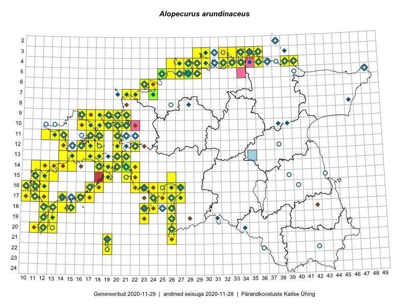

Alopecurus arundinaceus
Uuendatud: 2016-12-02
Kaardile koondatud taksonid: Alopecurus arundinaceus Poir.

Kaart põhineb 162 kirjel, neist vaatlusi 161 ja eksemplare 1. Taksonit on leitud 103 ruudust.
Kuvatud viited 20 esimesele andmebaasikirjele, ülejäänud PlutoFis
- Kadri Tali, Meeli Mesipuu: 2015-07-06: 16-17: ala
- Peedu Saar, Liina Oja: 2015-05-20: 18-26: ala
- Peedu Saar, Toomas Kukk: 2015-05-28: 11-17: ala
- Peedu Saar, Toomas Kukk: 2015-05-27: 09-16: ala
- Toomas Kukk, Eerik Leibak: 2015-08-10: 13-14: ala
- Toomas Kukk, Eerik Leibak: 2015-08-10: 13-15: ala
- Peedu Saar, Toomas Kukk: 2015-05-26: 10-16: ala
- Peedu Saar, Toomas Kukk: 2015-05-26: 10-17: ala
- Rein Kalamees, Kersti Püssa: 2015-08-31: 04-32: ala
- Rein Kalamees, Kersti Püssa: 2015-09-02: 03-36: ala
- Ott Luuk: 2014-07-24: 12-20: ala
- Peedu Saar, Elle Roosaluste: 2015-07-12: 13-20: ala
- Toomas Kukk, Peedu Saar: 2014-07-03: 14-21: ala
- Toomas Kukk, Eerik Leibak: 2015-08-11: 09-16: ala
- Rein Kalamees, Kersti Püssa: 2015-06-07: 04-30: ala
- Toomas Kukk: 2014-06-21: 16-10: ala
- Toomas Kukk: 2014-06-18: 18-14: ala
- Rein Kalamees, Kersti Püssa: 2015-09-12: 04-33: ala
- Ott Luuk, Elle Roosaluste, Jaak-Albert Metsoja: 2015-06-16: 18-15: ala
- Peedu Saar, Ott Luuk: 2015-10-14: 16-11: ala